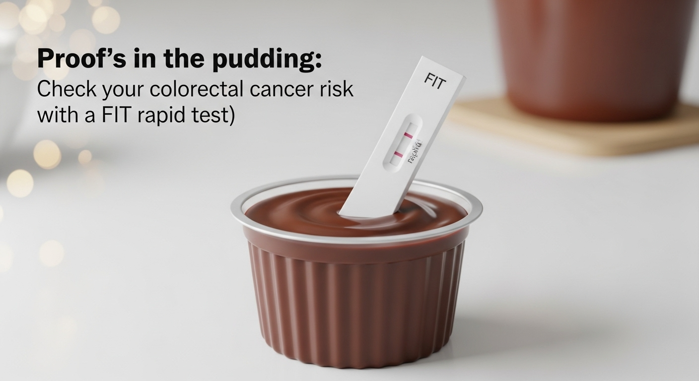

You deserve to know.
Canadian colorectal cancer screening programs start with the fecal immunochemical test (FIT), which detects fecal occult blood (FOB) and prioritizes patients for colonoscopies. Today, FIT tests are performed on mailed-in stool samples by private companies like LifeLabs, and testing is covered only for people over 50.
Health Canada has approved numerous FIT rapid tests for their accuracy and ease of use. But they are not widely available. We believe that getting FIT rapid tests to younger people currently excluded from cancer screening is essential to address rising rates of colorectal cancer among millennials. Plus, these tests can be performed at home or at a clinic, enabling faster, smarter decision making and staunching the flow of taxpayer money to American-owned labs that keep ripping Canadians off.
Sign up below to join the waitlist
and we'll let you know when we have FIT rapid screening tests available.
Please check all that apply:
I would purchase a FIT rapid test for myself or a loved one
I would use a FIT rapid test if it were provided free through a government screening program
I have a family history of colorectal cancer
I am interested in other cancer screening rapid tests (please specify by replying to our email)
Please provide your age (so we can understand demand relative to current and proposed screening ages):
Join Waitlist
By submitting your email address, we will subscribe you to occasional updates from Abundant Science. Your data are protected by
our privacy policy
and the laws of Canada and Ontario.
Abundant Resources • FIT Rapid Testing
Non-Rapid Test Colorectal Cancer Screening Information
(Cancer Care Ontario)
Comprehensive overview of FIT testing options and where to access them in Canada, including provincial programs.
Our TikTok Series
Follow us on TikTok for engaging content about FIT rapid testing and other health science topics.
Advocacy to Lower Screening Ages in Canada
Learn about efforts to lower the starting age for colorectal cancer screening in Canada, as reported by The Globe and Mail.